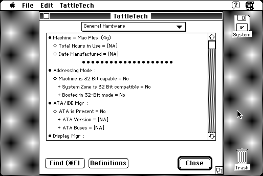

Download
tattletech2.59.zip (422K) TattleTech 2.59 repackaged into a zipped hfs disk image and checksum file. The disk image can be mounted with Mini vMac.
tattletech2.59.sea.hqx (733K) TattleTech 2.59 in the original format.
copyright: Decision Maker's Software, Inc
mod date: Mar 15, 1998
license: shareware
last known url
(gone)
"provides very complete information about your computer, peripherals, and system softare." For System 7 or higher. Version 2.17 is also available, for System 6.0.4 or higher.

Download other versions
tattletech2.17.zip (156K) TattleTech 2.17 repackaged into a zipped hfs disk image and checksum file. The disk image can be mounted with Mini vMac.
tattletech2.17.sea.hqx (356K) TattleTech 2.17 in the original format.
If you find these downloads useful, please consider helping the Gryphel Project, which hosts them.
Here are the md5 checksums for the downloads, signed with Gryphel Key 5:
--------- GRY SIGNED TEXT --------- e0a426b2f46fe7618972f3937806eac5 tattletech2.17.sea.hqx 3bccdf261bf07b6b50ff28038adc1963 tattletech2.17.zip 3aea9589b0db1c69a6cb4c591275287c tattletech2.59.sea.hqx 20afdd3e516fc3c5a113596f04644785 tattletech2.59.zip ------- BEGIN GRY SIGNATURE ------- Gry/4Xa8CFcUzxdN/BCEmbrb9kdkrNgLAhpEhc7w8bQPUCwkA5JOcKGQjJZ0pOCZ JBoPd3FO9W7+aCt6sc6idphiC27aT6ImnMlX04RI7LLAmnAPM0cgITVMHX2Pvyz5 6mtxg2FgT77UOeDbXxA0q/nJdvhTxhq/m5v9ntCxQ7IabBIjMef0X0SqWCGGrfSd -------- END GRY SIGNATURE --------